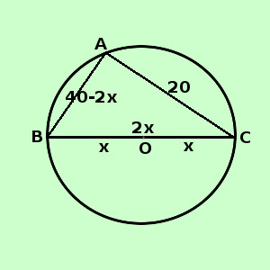

|
soluzione Risolvere il seguente problema La somma dell'ipotenusa e di un cateto di un triangolo rettangolo misura 40 cm. Sapendo che l'altro cateto misura 20 cm. determinare il raggio del cerchio circoscritto al triangolo ipotesi: il triangolo e' rettangolo la somma dell'ipotenusa e di un cateto misura 40 cm l'altro cateto misura 20 cm. tesi: trovare il raggio del cerchio circoscritto al triangolo  Il teorema "di Dante" dice che il diametro del cerchio circoscritto corrisponde all'ipotenusa del triangolo rettangolo raggio del cerchio circoscritto = BO = OC = x ipotenusa = BC = 2x primo cateto = AB = 40 - BC = 40 - 2x secondo cateto = AC = 20 cm Applico il Teorema di Pitagora al triangolo AB2 + AC2 = BC2 (40 - 2x)2 + 202 = (2x)2 1600 - 160x + 4x2 + 400 = 4x2 4x2 - 4x2 - 160x = - 400 - 1600 - 160x = - 2000
|